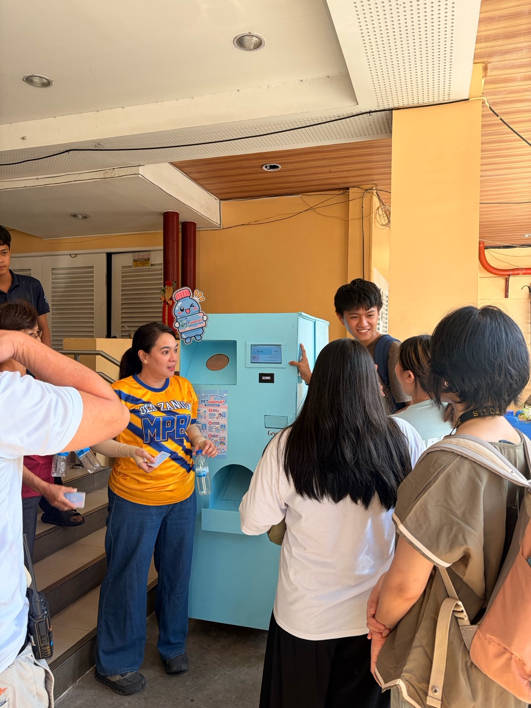
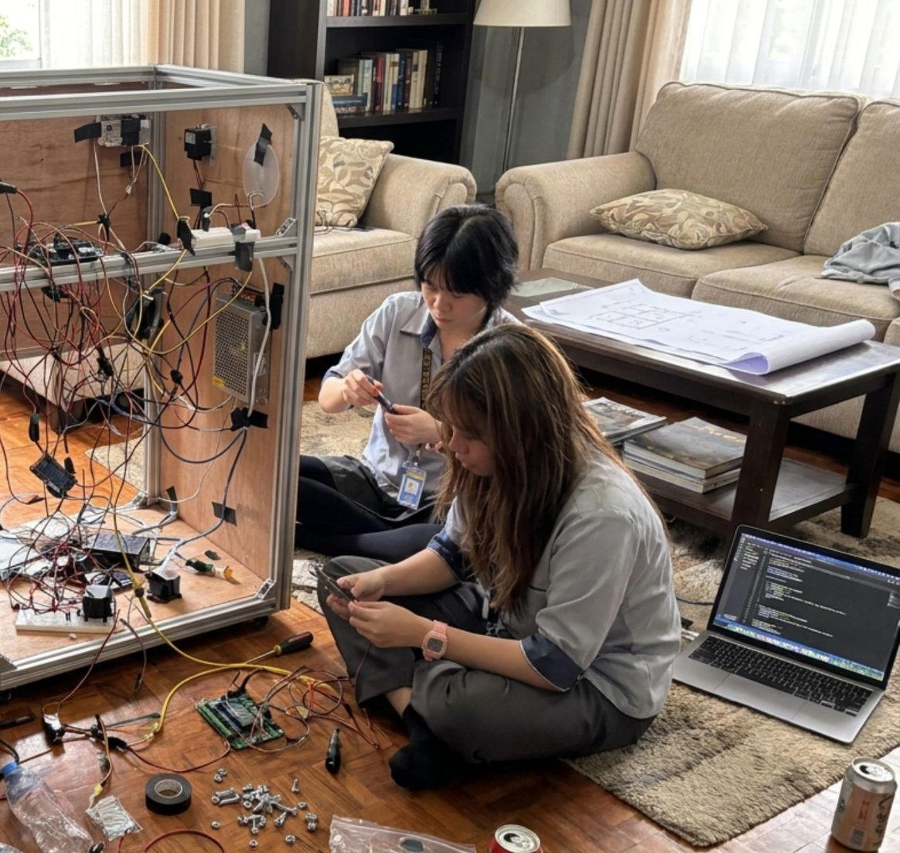
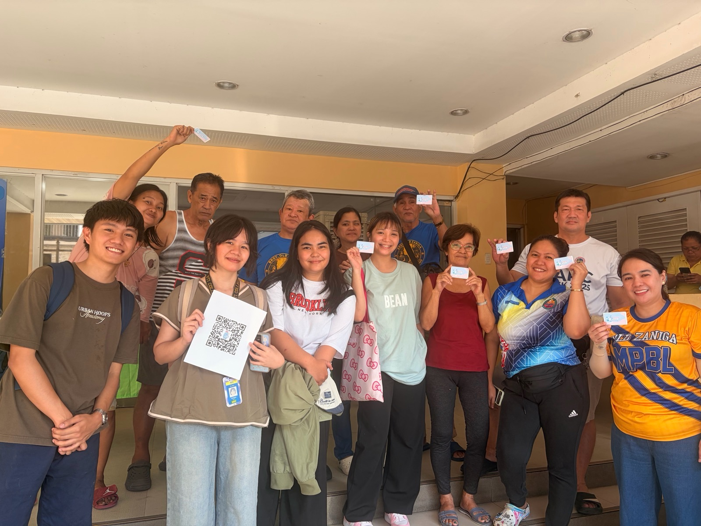

Event photoPETsalamat comes to Old Zaniga
We brought PETsalamat to Barangay Old Zaniga. The Barangay Captain and residents deposited their bottles, earned points and redeemed them for coins on the spot.
Smart waste management · Mandaluyong City
CJMR Tech builds PETsalamat, a reverse vending machine that uses AI to recognize every PET bottle, rejects anything with liquid left inside, and pays residents in points they can redeem for coins on the spot. No barcodes to fake, no manual tallying.

Plastic bottles are among the most common litter in Metro Manila, and most of them never reach a recycler. They end up in creeks and drainage canals, and the flooding that follows is something our own families in Mandaluyong have lived through.
Most reverse vending machines identify bottles by barcode, which can be faked, reused or fail on a torn label. Residents rarely get anything back for segregating their waste, and when we asked them, lack of time, lack of nearby collection points and lack of information were the top reasons they don't recycle.
| Who | Today | With PETsalamat |
|---|---|---|
| Residents | Flooding and dengue risk from clogged drains. No reward for recycling. | Points for every accepted bottle, redeemable for coins right at the machine. |
| Barangay officials | Heavy manual tracking and no real-time data. | Every deposit, claim and redemption logged automatically by card and weight. |
| Recyclers | Losses from fake barcodes and contaminated, poorly sorted batches. | Only verified, empty PET bottles are collected. |
A reverse vending machine for empty PET bottles, built for barangay halls, schools and public areas.
We partner with barangay governments to place and run PETsalamat machines. Households are the end users.
Residents want to keep using PETsalamat in their community. They like getting the right amount of coins every time and seeing their points update right away.
A larger screen and a Tagalog option, easier bottle insertion, support for 2-liter bottles, bigger storage, e-wallet redemption, and more machines in more locations.
| Alternative | Strength | Limitation |
|---|---|---|
| Barcode reverse vending machines | Proven and widely adopted | Counterfeit barcodes get through, torn labels get rejected |
| Workplace reward machines | Digital rewards for deposits | Rewards limited to the provider's own clients |
| App-based drop-off programs | Points for eco-friendly products | Requires manual collection at drop-off points |
| Junk shops, manual segregation | Familiar to residents | No incentive at home, no tracking |
| PETsalamat | AI bottle recognition, liquid and glass detection, weight-based points on an RFID card, coins paid out at the machine, and it works offline. | |
The team behind PETsalamat.
 2×2 photo
2×2 photoCean Raphael Cabio
 2×2 photo
2×2 photoJholeena Chrissa Lorenzo
 2×2 photo
2×2 photoMitzi Diane Manlugon
 2×2 photo
2×2 photoRio Gerisa Ocampo
PETsalamat at work in Barangay Old Zaniga, Mandaluyong City.

Event photoWe brought PETsalamat to Barangay Old Zaniga. The Barangay Captain and residents deposited their bottles, earned points and redeemed them for coins on the spot.

Event photoResidents registered their PETsalamat cards and kept the machine busy until the coin dispenser ran out.
We work with barangay officials on placement, setup, coin refills, bottle collection and reporting. Tell us about your community and we'll get back to you.